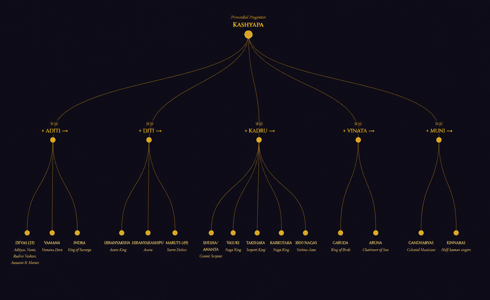

यत्र देवाः सर्वे निवसन्ति — Where All the Gods Dwell
Yakshas · Gandharvas · Apsaras · Nagas · Kinnaras
A scripturally grounded encyclopedia of the semi-divine races — their origins in the Vedas and Puranas, their kingdoms, genealogies, and cosmic roles across the fourteen worlds.
Cosmological Framework
Hindu cosmology does not posit a simple binary of gods and mortals. The universe is populated by numerous races of beings at different planes of existence — each with distinct origins, powers, and roles in the cosmic drama of Dharma.
Encyclopedia · I
Guardians of hidden wealth, keepers of ancient forests, and arbiters of profound wisdom — the Yakshas are among the oldest beings in Indian cosmological thought, predating the formalized Puranic systems.
The Puranas present two primary genealogical accounts of the Yakshas. In the Vishnu Purana (I.5), Yakshas are among the first created beings, born from the foot of Brahma alongside Rakshasas — a classification reflecting their chthonic nature. In the Ramayana (Uttara Kanda), they are given a more specific origin as sons of Pulastya (or alternatively Kashyapa by Khasa). The Mahabharata (Shanti Parva) presents Kubera as the son of Vishrava (son of Pulastya), making the Yaksha king a great-grandson of Brahma. The Atharvaveda (AV 8.6) is among the earliest textual references, treating Yakshas as powerful, mysterious presences in the natural world.
Kubera's capital Alaka (also called Vasudhara or Prabhavati in some texts) is described in rapturous detail in Kalidasa's Meghaduta and the Mahabharata's Vana Parva. Located on Mount Kailasha's slopes near Gandhamadana, Alaka is a city of impossible wealth — its streets studded with gems, its pleasure gardens filled with eternal spring. The Ramayana (7.3) notes that Lanka itself was originally built for Kubera before Ravana usurped it. Kubera rules from his Pushpaka Vimana (aerial palace-chariot) and commands eight Nidhi-keepers (treasure guardians), each controlling a particular form of wealth.
Encyclopedia · II
Masters of the celestial arts, keepers of divine knowledge, and intermediaries between the human and divine — the Gandharvas embody the transformative power of music and beauty in Hindu cosmology.
The Rigveda (RV 10.85.21) mentions a single Gandharva who knows the home of the gods and guards the Soma plant. By the Atharvaveda, Gandharvas are multiple beings associated with aromatic plants, waters, and the sky. The Vishnu Purana (I.21) systematically places them as born from Brahma's nose or from Kashyapa and his wife Muni. The Mahabharata counts 6400 Gandharvas but lists only a fraction by name. Critically, early Vedic Gandharvas are sky beings who guard Soma — their later evolution into court musicians is a Puranic development that reflects changing aesthetic priorities.
Encyclopedia · III
Born of the waters at the churning of the cosmic ocean, the Apsaras are celestial dancers whose narratives form some of the most humanly resonant stories in the entire corpus of Sanskrit literature.
The etymology of "Apsaras" derives from ap (water) + saras (moving) — beings who move through water or who emerged from the primal waters. The Mahabharata (Adi Parva, Astika Parva) narrates that during Samudra Manthana, Apsaras emerged from the churned ocean — though no god claimed them as their own, and so they became "common" (sadharana) to all the worlds. The Vishnu Purana names 34 primary Apsaras, and the Mahabharata lists individual ones in connection with specific stories. The Apsaras are classified into two broad types: Laukika (worldly, who dwell in earthly water bodies) and Daivika (divine, who serve in Svarga).
Encyclopedia · IV
From the cosmic serpent sustaining the universe to the warrior kings of subterranean cities — the Nagas are among the most cosmologically significant beings in Hindu thought, their symbolism reaching from the deepest earth to the highest tantric practice.
The definitive Puranic genealogy places all Nagas as descendants of Kashyapa (the primordial progenitor) and his wife Kadru. The Adi Parva of the Mahabharata narrates this in elaborate detail in the Astika Parva (chapters 13–58) — the foundational Naga narrative cycle that also contains the story of Garuda (Kashyapa's son by Vinata, Kadru's co-wife), explaining the eternal enmity between serpents and the eagle.
The Nagas populate Nagaloka, identified with the Patala (netherworld) levels — particularly Sutala, Vitala, and Patala proper. The Bhagavata Purana (V.24) describes Nagaloka as a region of extraordinary beauty with gem-lit skies, magnificent cities, and pleasure gardens tended by Naga women of supreme beauty.
Lineage Maps
All major semi-divine races trace their lineage ultimately to Kashyapa, the primordial progenitor whose unions with different wives produced the spectrum of life in the fourteen worlds.

Itihasa & Purana
The encounters between divine beings and humans in the Epics and Puranas are not merely mythological entertainment — they are encoded transmissions of cosmological, ethical, and psychological wisdom.
Spiritual Dimensions
Each class of divine beings encodes layers of meaning — cosmological, psychological, yogic, and socio-ritual. These are not merely mythological decorations but maps of the inner and outer cosmos.
Systematic Overview
The Hindu cosmological system assigns each class of beings to specific Lokas (planes of existence), with defined roles, genealogies, and modes of interaction with human and divine realms.
| Being | Origin | Primary Realm | Ruler | Nature | Key Text |
|---|---|---|---|---|---|
| Devas | Kashyapa + Aditi | Svarga, Amaravati | Indra | Sattvic | Rigveda, Vishnu Purana |
| Asuras | Kashyapa + Diti/Danu | Patala, Sutala | Bali (Vairocana) | Rajasic | Bhagavata Purana VIII |
| Yakshas | Brahma's foot / Pulastya | Alaka, Himalayas | Kubera | Mixed | Vishnu Purana I.5 |
| Gandharvas | Brahma's nose / Kashyapa + Muni | Gandharvaloka | Chitraratha | Sattvic | Vishnu Purana I.21 |
| Apsaras | Primal waters (Samudra) | Svarga, heavenly pools | None (Common) | Divine | Mahabharata Adi Parva |
| Nagas | Kashyapa + Kadru | Nagaloka, Patala | Shesha / Vasuki / Takshaka | Chthonic | Mahabharata Astika Parva |
| Rakshasas | Brahma's water / Pulastya | Lanka, dark forests | Ravana | Tamasic | Ramayana Uttara Kanda |
| Kinnaras | Brahma / Kashyapa + Muni | Kailasha, Gandhamadana | Under Kubera | Celestial | Vishnu Purana |
| Siddhas | Tapas / Brahma's mind | Siddhaloka | Kapila (Sankhya) | Perfected | Bhagavata Purana III |
| Vidyadharas | Kashyapa / Brahma | Himalayan peaks, sky | Various kings | Sky-dwellers | Markandeya Purana |
Scholarly Dimensions
A responsible engagement with these traditions requires distinguishing between what the texts say, what later interpreters claim, and what modern scholarship can reconstruct. These are three genuinely different things.
Common Questions